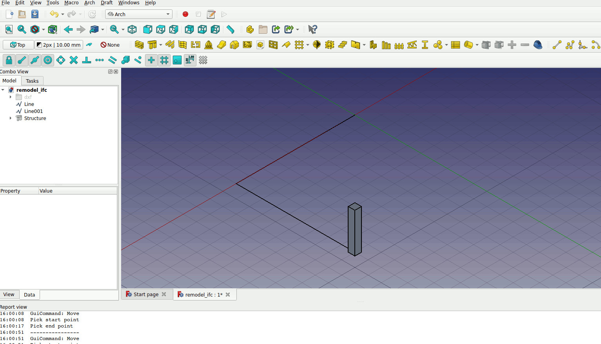
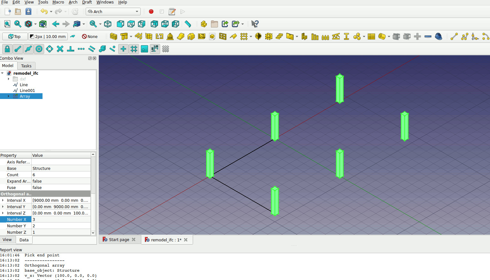
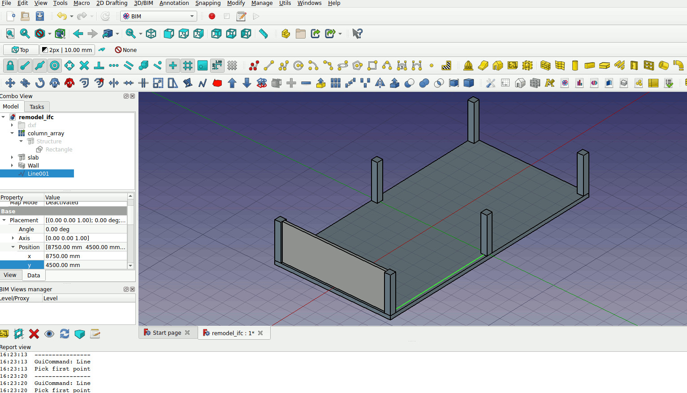

1. BIM with FreeCAD#
This entry is based on these resources:
1.1. Native IFC FreeCAD#
1.2. Installing IFCOpenShell if necessary#
check the python console what version is FreeCAD using, check where is the path by typing
sys.path
install ifcopenshell by downloading the prebuilt version https://blenderbim.org/docs-python/ifcopenshell-python/installation.html
unzip and put it in the freecad python directory, you can find it by running sys.path and paying attention to the path printed.
1.3. Importing images for tracing#
PDF does not import well. Instead convert the PDF to either PNG or JPG.
Depending on the scale of your drawing scale the drawing with the Xsize and YSize parameters. If your drawing is 1:250, You can scale it to actual size by doing e.g. 210mm * 250
Double click on the image in the side-bar and adjust the transparency as accordingly.
1.4. Change transparency of 3D objects through appearance options#
Right click on the object -> Appearance and adjust the transparent and materials as accordingly.
These options will be reflected in the GLTF export.
For windows and doors:
first change the appearance
double click into the window/door
edit one of the component and update
that should update the appearance of the component.
1.5. Modeling with FreeCAD#
Go to the Arch workbench.
First draw the 500mm x 500mm rectangle. Turn it into a column by clicking on the structure button.
Array it into a column grid using the array tool. Set the x interval to 9m and y interval to 9m, with number of array at x=3,y=2,z=1
Draw lines to represent the walls. Then click on the line and click on the walls button to make the line a wall.
To combine two walls. Ctrl click on both of the walls and click on the plus sign on the tool bar to merge them.
You can separate them by using the minus sign. Open the tree and choose the wall you want to separate and click on the minus sign.
To model windows. Draw the windows on 2d using the drafting tools. Then change the 2d shapes into a sketch by using the draft to sketch tool. Choose the sketch and click on the window tool.
further configure the window by double clicking on the window and creating the frame and each glass panel component.
{kind=link}
{kind=link}
{kind=link}
{kind=link}
{kind=link}
1.6. Setting property set of IFC elements#
Install the BIM workbench.
In the workbench go to Manage IFC Properties -> choose the ifc element -> add property set or add property
Input the value accordingly.
1.7. Export to IFC and read with IFCOpenshell#
Select the component you want to export. If you choose BIM building component. The export will include all the components in it. If you only choose only “Wall”, only that component will be exported.
currently materials are only exported if they are assigned to a BIM entity.
MultiMaterials are not exported properly into IFC format.
Once exported you can read the IFC file with IFCOpenshell.
https://blenderbim.org/docs-python/ifcopenshell-python/code_examples.html
https://wiki.osarch.org/index.php?title=IfcOpenShell_code_examples
import ifcopenshell ifc_path = '/home/chenkianwee/kianwee_work/get/projects/grundfos/model/ifc/grundfos-Building.ifc' model = ifcopenshell.open(ifc_path) print(model.schema) # May return IFC2X3, IFC4, or IFC4X3. print(model.by_id(1)) walls = model.by_type('IfcWall') mats = model.by_type('IfcSurfaceStyle') print(mats) for w in walls: print(w.get_info()['Name']) psets = ifcopenshell.util.element.get_psets(w) print(psets) container = ifcopenshell.util.element.get_container(w) print(container) mat = ifcopenshell.util.element.get_materials(w) print(mat)
{kind=link}
1.8. Sectional Cuts with FreeCAD#
Choose a working plane and then Go to BIM > Section Plane. A section plane will be created on the selected plane. Move the plan accordingly to where you want your cut to be. Double click on the section plane to add new objects into the section plane.
double click on the section plane, then go to the model tab where you can choose all the objects you want to be included in the section cut.
You can trigger the sectional cut by right-click -> Toggle Cutview
In the BIM workbench go to Annotation -> Shape-based view. This will project the section onto the xy plane. You might have to turn off the visibility of your 3d model to see the projected lines below it.
Go to the TechDraw workbench. Go to TechDraw -> Page -> Insert Default Page. You will see a new view opened called a Page.
On the model view, select the section you want to insert into the page. Go to TechDraw -> Views from Other Workbenches -> Insert Arch Workbench Object.
In the data tab, make sure the “All On” parameter is set to true
scale your section. e.g. if you want a 1:100 scale change it to ‘=1/100’
You can move your section anywhere on the drawing. Click on the view and adjust the lineweights etc accordingly.
To annotate the drawing. Go to TechDraw -> Annotations
To draw lines, Go to TechDraw -> Add Lines
1.9. Views with TechDraw#
Go to TechDraw workbench -> TechDraw -> Page -> Insert Page using Tempate
choose the right template and create the page
In the BIM workbench insert view by first selecting the section cut object then go to Annotation -> View and it will insert that view onto that page.
Choose the Part you want to be in the TechDraw page. Go to TechDraw -> TechDraw Views -> Insert View
scale the view as accordingly
Once that you have a view, you can cut section using that view in TechDraw.
You can do dimension with the BIM workbench. You can customize the dimension by applying annotation styles onto the dimensions.
1.9.1. TechDraw Templates#
customize your own template https://blog.freecad.org/2023/12/19/tutorial-create-custom-techdraw-templates/
1.10. Rendering with the Render Workbench#
Install povray with the command
sudo apt install povray
Install the Render workbench using the workbench manager
Go to the Render Workbench, go to Render -> Render
In workbench settings, enter /usr/bin/povray in ‘PovRay executable path’.
Create a rendering project go to Render -> Projects -> Povray Projects. Choosen the povray_studio_light.pov
Select the objects you want to render and ctrl+click the povray project. Then click on the Rendering View icon. A render view will be created in the project.
Change to perspective view and to the scene you want to render. Click on the Project on the tree view and click Render.
1.11. Print from 3D view#
Go to Edit -> Preferences -> Display -> Camera type -> Perspective rendering
Minimize the window. The print preview will be accurate.